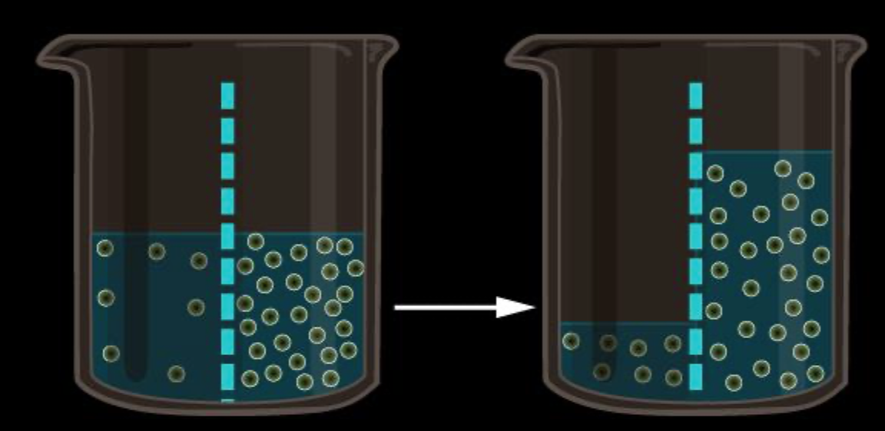
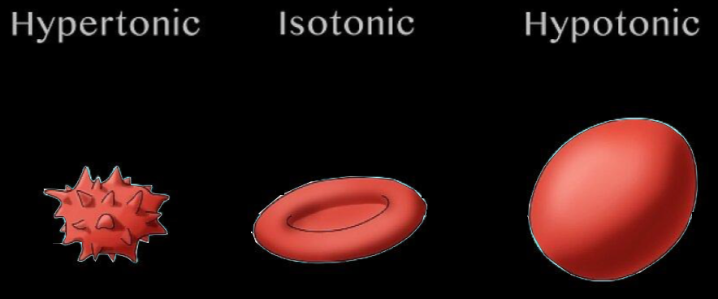
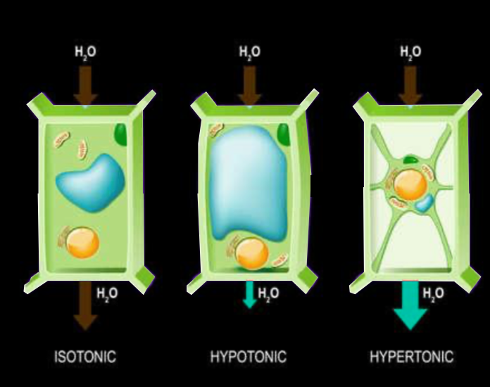
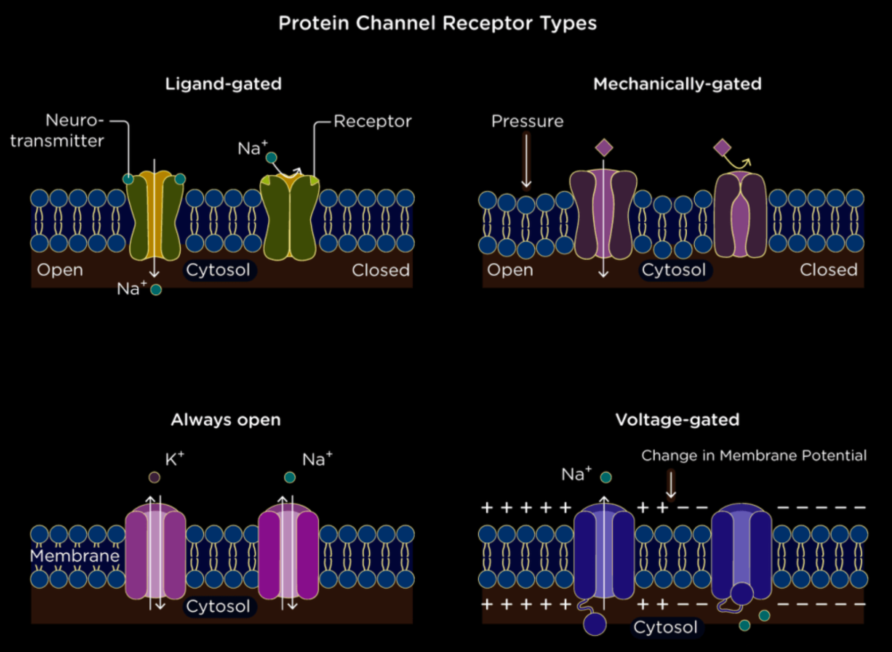

Passive Transport
- It is called so because it is a type of transport that requires no input of energy.
- Diffusion is the movement of particles of the substance filing all the available space in a homogenous way, as a consequence of their constant thermal motion due to the possessed thermal energy.
- The role of diffusion between the intracellular and extracellular solutions is to bring the two at a dynamic equilibrium, in which the concentrations of the considered substance is equal on both sides of the membrane. Therefore, a substance will diffuse from where it is more concentrated to where it is less concentrated, down its concentration gradient.
Osmosis
Osmosis is the diffusion of free water across the membrane. When the substance molecules are too large to pass through the cell, the dynamic equilibrium will be reached by the movement of water molecules. The more concentrated solution (referring to the substance we are considering for the equilibrium) has a lower free water concentration, while the less concentrated solution has a higher free water concentration. Therefore, the molecules will move from the solution with a higher free water concentration (lower solute concentration) to the one with the lower free water concentration (higher solute concentration).

- Tonicity is the ability of a surrounding solution to cause a cell to lose or gain water.
- If an animal cell (which you have learned previously that it does not have a cell wall) is immersed in an isotonic solution (meaning of the same concentration as inside the cell) there will be no net movement of water between the solution and the cell.
- If an animal cell is immersed in a hypertonic solution (meaning higher solute concentrations than inside the cell), the cell will lose water, get smaller in dimensions and eventually die.
- If an animal cell is immersed in a hypotonic solution (meaning lower solute concentration than inside the cell), water will enter the cell which will swell and lyse, a process called cytolyse (explode or burst).

- If a cell that presents a cell wall (such as from plants, prokaryotes, fungi and some protists) is added to a hypotonic solution, it will take in water and swell only as much as the inflexible cell wall allows, point after which it exerts a turgor pressure on the cell, causing the cell to become turgid (rigid), which is the health state for most plant cells as it also poses an important role in the plant's mechanical support.
- Placed in an isotonic solution, the plant cell becomes flaccid (limp) and the plant wilts.
- However, when we place a cell wall in a hypertonic environment the cell wall won't be of much help. The water will leave the cell, and the plasma membrane will pull away from the cell wall, a phenomenon called plasmolysis, which causes the plant to wilt and can lead to plant death.

Facilitated Diffusion
- Facilitated diffusion is the process through which ions and many polar molecules pass through the membrane with the help of transport proteins (there are two types of transport proteins - channel proteins and carrier proteins).
- Channel proteins provide corridors that allow specific molecules or ions to cross the membrane. Ion channels function as gated channels, meaning that they open or close in response to a stimulus. For example, the potassium ion channel of the nerve cell opens in response to an electrical stimulus. Other gated channels have a chemical stimulus , meaning that they open or close when a specific substance (other than the substance that they transport) binds to the channel.
- Carrier proteins undergo a change in shape that translocated the solute-binding site across the membrane and this change may be triggered by the binding and release of the transported molecule. Therefore, like ion channels, carrier proteins involved in facilitated diffusion result in the net movement of a substance down its concentration gradient, without any energy input. An example of a carrier protein is the glucose transporter in red blood cells that are so selective they even reject fructose (a structural isomer of glucose).

Written by Bianca Buzas